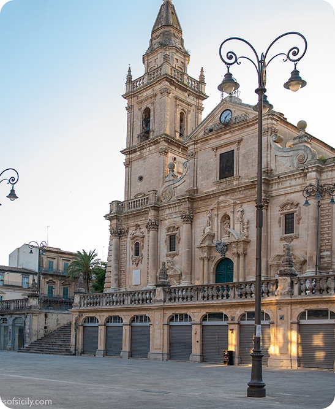

Una piazza, mille storie
Piazza San Giovannirappresenta uno degli spazi urbani più importanti della città di Ragusa ed è il centro principale di Ragusa Superiore. Ampia, luminosa e circondata da eleganti edifici, la piazza costituisce un punto di incontro fondamentale per la vita sociale dei cittadini. Nel corso del tempo è diventata un luogo simbolico della città, dove si intrecciano storia, architettura e quotidianità.
L’elemento dominante della piazza è la maestosaCattedrale di San Giovanni Battista, dedicata al patrono della città, Giovanni Battista. L’edificio fu ricostruito nel XVIII secolo in seguito al devastante Terremoto della Val di Noto del 1693, che distrusse gran parte dei centri abitati della Sicilia sud-orientale.
La cattedrale si distingue per la sua imponente facciata barocca, caratterizzata da ricche decorazioni, colonne e statue che creano un effetto scenografico molto suggestivo. L’ampia scalinata che conduce all’ingresso contribuisce a valorizzare ulteriormente la monumentalità dell’edificio.